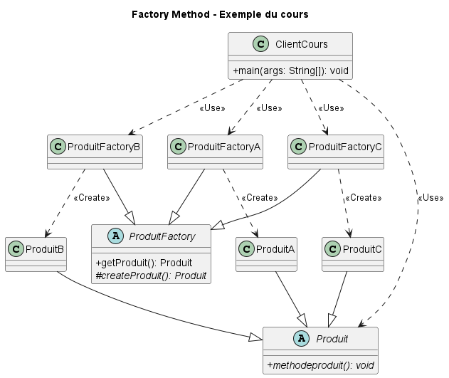
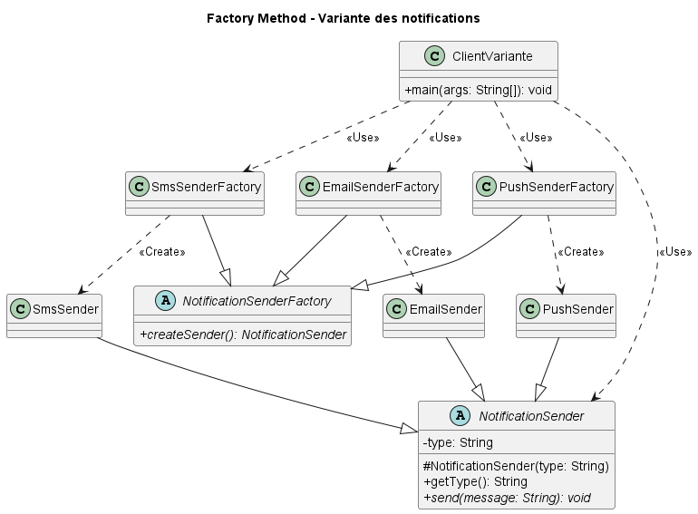

Exemple du cours et variante concrète : création de moyens d’envoi de notifications
Étudiant : Theodore Wilfried Bitjong
Matricule : 23U2331
Dépôt GitHub :
https://github.com/inf461-bitjong/factory-method
Organisation GitHub :
https://github.com/inf461-bitjong
11 novembre 2026
Factory Method (fabrique) est un patron de création qui définit une méthode de création permettant aux sous-classes de choisir le type concret de l’objet produit. Le client manipule une abstraction et délègue l’instanciation à une fabrique, plutôt que de construire lui-même chaque produit concret.
Dans l’exemple du cours, ProduitFactory fournit getProduit(), qui délègue à createProduit(), redéfinie dans les fabriques concrètes. Dans la variante, NotificationSenderFactory déclare directement createSender(), redéfinie par les fabriques SMS, Email et Push. Dans les deux cas, le client sélectionne explicitement la fabrique concrète utilisée.
L’exemple présente une famille de produits abstraits Produit. Les classes ProduitA, ProduitB et ProduitC implémentent la même opération. Le créateur abstrait ProduitFactory définit getProduit(), qui appelle sa méthode de fabrique protégée createProduit(). Chaque fabrique concrète crée un type de produit différent.

Figure 1 — Organisation des produits et fabriques dans l’exemple du cours.
Les extraits suivants reprennent le code source du dépôt.
package cours;
import cours.abstractions.Produit;
import cours.abstractions.ProduitFactory;
import cours.factories.ProduitFactoryA;
import cours.factories.ProduitFactoryB;
import cours.factories.ProduitFactoryC;
public class ClientCours {
public static void main(String[] args) {
System.out.println("--- EXEMPLE DU COURS : Factory Method ---");
ProduitFactory factoryA = new ProduitFactoryA();
ProduitFactory factoryB = new ProduitFactoryB();
ProduitFactory factoryC = new ProduitFactoryC();
Produit produit = factoryA.getProduit();
produit.methodeproduit();
produit = factoryB.getProduit();
produit.methodeproduit();
produit = factoryC.getProduit();
produit.methodeproduit();
}
}package cours.abstractions;
public abstract class Produit {
public abstract void methodeproduit();
}package cours.abstractions;
public abstract class ProduitFactory {
public Produit getProduit() {
return createProduit();
}
protected abstract Produit createProduit();
}package cours.factories;
import cours.abstractions.Produit;
import cours.abstractions.ProduitFactory;
import cours.models.ProduitA;
public class ProduitFactoryA extends ProduitFactory {
@Override
protected Produit createProduit() {
return new ProduitA();
}
}package cours.factories;
import cours.abstractions.Produit;
import cours.abstractions.ProduitFactory;
import cours.models.ProduitB;
public class ProduitFactoryB extends ProduitFactory {
@Override
protected Produit createProduit() {
return new ProduitB();
}
}package cours.factories;
import cours.abstractions.Produit;
import cours.abstractions.ProduitFactory;
import cours.models.ProduitC;
public class ProduitFactoryC extends ProduitFactory {
@Override
protected Produit createProduit() {
return new ProduitC();
}
}package cours.models;
import cours.abstractions.Produit;
public class ProduitA extends Produit {
@Override
public void methodeproduit() {
System.out.println("je suis un produit de type A");
System.out.println("produitA.methodeproduit()");
}
}package cours.models;
import cours.abstractions.Produit;
public class ProduitB extends Produit {
@Override
public void methodeproduit() {
System.out.println("je suis un produit de type B");
System.out.println("produitB.methodeproduit()");
}
}package cours.models;
import cours.abstractions.Produit;
public class ProduitC extends Produit {
@Override
public void methodeproduit() {
System.out.println("je suis un produit de type C");
System.out.println("produitC.methodeproduit()");
}
}La variante applique le patron à l’envoi de notifications. NotificationSender est l’abstraction des expéditeurs ; les classes EmailSender, SmsSender et PushSender fournissent chacune leur comportement send(). Les fabriques concrètes créent l’expéditeur associé au canal demandé.

Figure 2 — Organisation des expéditeurs et fabriques pour les notifications.
Factory Method est adapté, car les canaux de notification constituent une famille de produits substituables derrière l’abstraction NotificationSender. Une nouvelle implémentation peut ajouter un expéditeur et sa fabrique sans modifier les classes déjà présentes. Le client de cette démonstration choisit toutefois chaque fabrique concrète dans son code ; la sélection du canal n’est donc pas encore externalisée.
Les extraits suivants reprennent le code source du dépôt.
package variante;
import variante.abstractions.NotificationSenderFactory;
import variante.abstractions.NotificationSender;
import variante.factories.EmailSenderFactory;
import variante.factories.PushSenderFactory;
import variante.factories.SmsSenderFactory;
public class ClientVariante {
public static void main(String[] args) {
System.out.println("--- EXEMPLE MODIFIE : Factory de Senders de Notification ---");
NotificationSenderFactory factorySms = new SmsSenderFactory();
NotificationSender smsSender = factorySms.createSender();
smsSender.send("Votre code de validation est 9832");
NotificationSenderFactory factoryEmail = new EmailSenderFactory();
NotificationSender emailSender = factoryEmail.createSender();
emailSender.send("Bienvenue sur notre application !");
NotificationSenderFactory factoryPush = new PushSenderFactory();
NotificationSender pushSender = factoryPush.createSender();
pushSender.send("Vous avez un nouveau message.");
}
}package variante.abstractions;
public abstract class NotificationSender {
private final String type;
protected NotificationSender(String type) {
this.type = type;
}
public String getType() {
return type;
}
public abstract void send(String message);
}package variante.abstractions;
public abstract class NotificationSenderFactory {
public abstract NotificationSender createSender();
}package variante.factories;
import variante.abstractions.NotificationSenderFactory;
import variante.abstractions.NotificationSender;
import variante.models.EmailSender;
public class EmailSenderFactory extends NotificationSenderFactory {
@Override
public NotificationSender createSender() {
return new EmailSender();
}
}package variante.factories;
import variante.abstractions.NotificationSenderFactory;
import variante.abstractions.NotificationSender;
import variante.models.SmsSender;
public class SmsSenderFactory extends NotificationSenderFactory {
@Override
public NotificationSender createSender() {
return new SmsSender();
}
}package variante.factories;
import variante.abstractions.NotificationSenderFactory;
import variante.abstractions.NotificationSender;
import variante.models.PushSender;
public class PushSenderFactory extends NotificationSenderFactory {
@Override
public NotificationSender createSender() {
return new PushSender();
}
}package variante.models;
import variante.abstractions.NotificationSender;
public class EmailSender extends NotificationSender {
public EmailSender() {
super("EMAIL");
}
@Override
public void send(String message) {
System.out.println("[" + getType() + "] Envoi d'un courriel : " + message);
}
}package variante.models;
import variante.abstractions.NotificationSender;
public class SmsSender extends NotificationSender {
public SmsSender() {
super("SMS");
}
@Override
public void send(String message) {
System.out.println("[" + getType() + "] Envoi d'un SMS : " + message);
}
}package variante.models;
import variante.abstractions.NotificationSender;
public class PushSender extends NotificationSender {
public PushSender() {
super("PUSH");
}
@Override
public void send(String message) {
System.out.println("[" + getType() + "] Envoi d'une notification push : " + message);
}
}